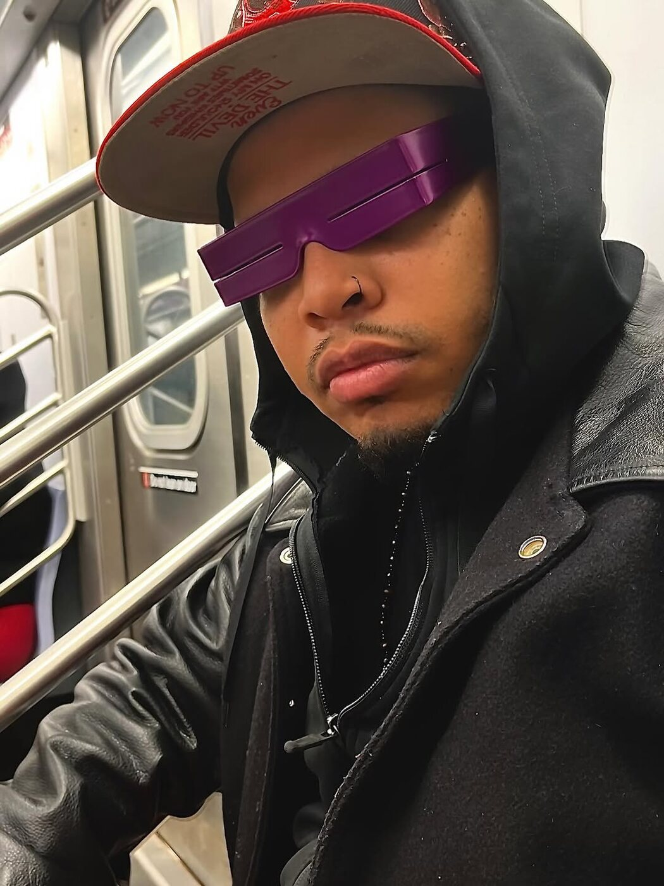
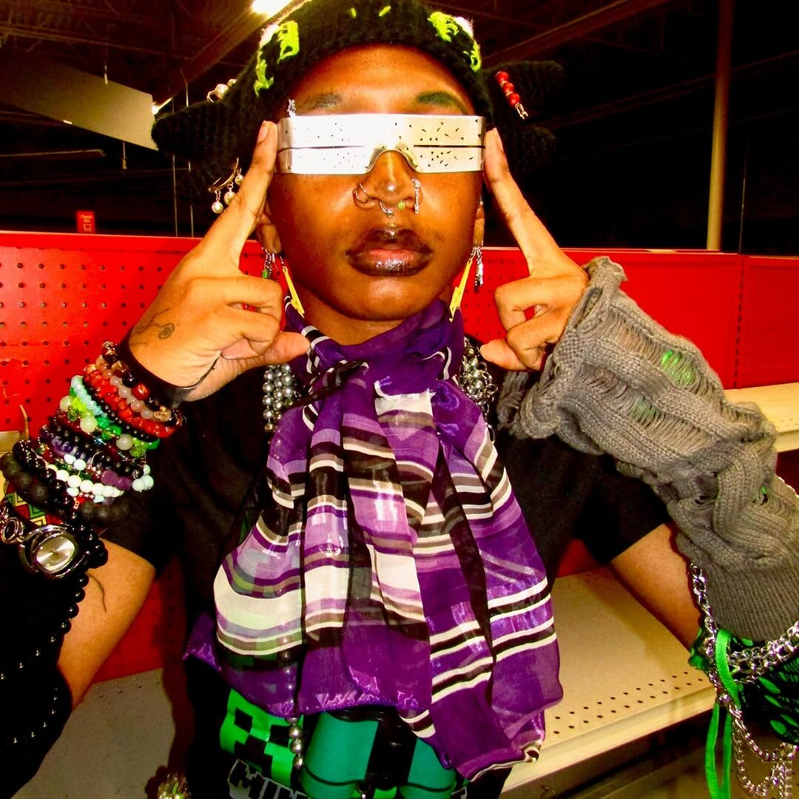
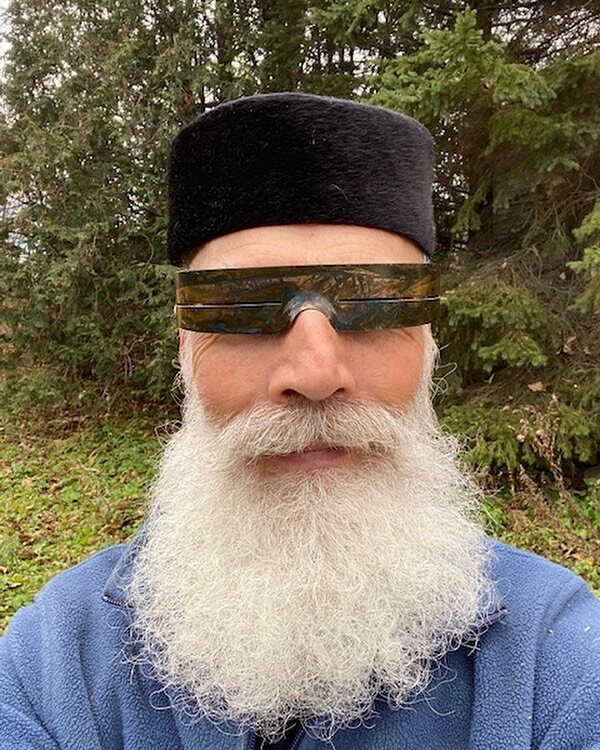
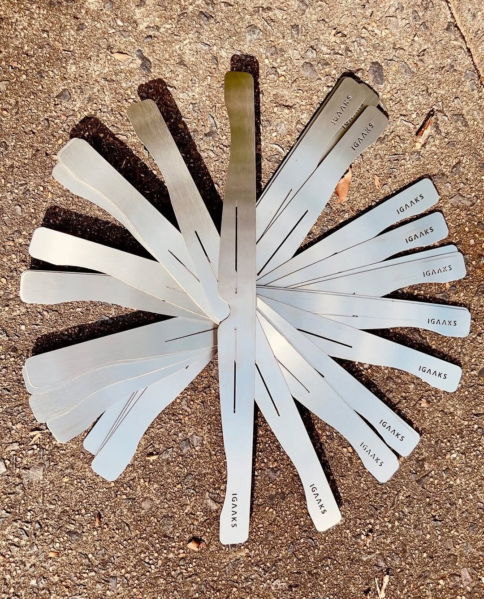
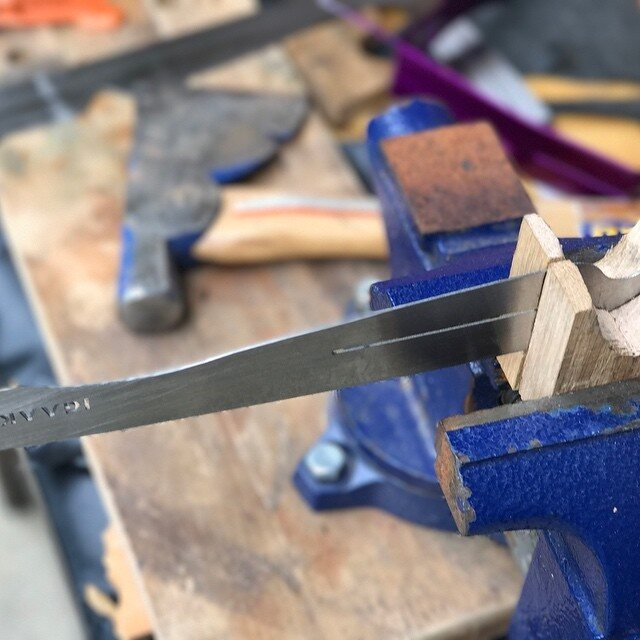
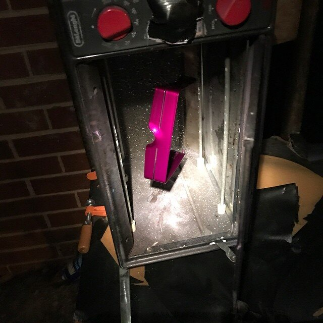
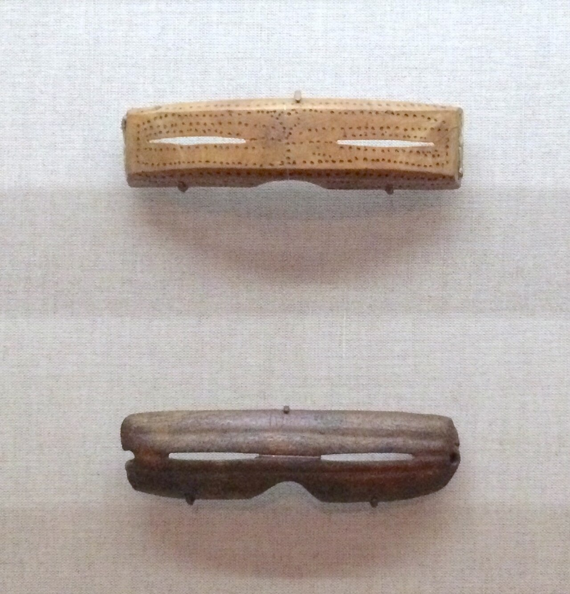

In transit
Carl Millan
The Bronx

Wearable metalwork • Durham NC
Handcrafted metal eyewear. Built one piece at a time.
01 / OBJECT
IGAAKS transforms a solid sheet of metal into sculptural eyewear with one precise horizontal opening. The form wraps across the face, sharpening the silhouette while leaving the wearer unmistakably themselves.
02 / IN THE WILD
Not a rendering. Not a concept. Real IGAAKS photographed on the subway, on city streets, at events, and in everyday life.

Carl Millan
The Bronx

Metal in
natural light
03 / HOW IGAAKS ARE BORN
The Instagram workshop posts reveal a direct, hands-on process: prepare the metal, work the form at the bench, then build up a distinctive surface.

Flat blanks are laid out for custom orders. The standard material is solid 20-gauge stainless steel or brass.

The metal is bench-worked and shaped by hand in Durham, giving each piece its wrap and individual character.

“Night cooking” shows a vivid finish curing in the workshop. Pieces may be raw, oxidized, powder-coated, or finished with heat-cured resin.
Custom work can go further: one Instagram post pairs tiger-pattern eyewear with a heavy-duty steel cuff for Mardi Gras. The feed makes clear that IGAAKS is not simply selecting colors from a catalog—the studio adapts material, surface, and companion pieces to the commission.
04 / SURFACE
05 / CUSTOM STUDIO
Custom colors, surfaces, companion pieces, and special orders begin with a conversation. The result should feel specific to the person who will wear it.
Start a custom piece ↗
06 / ORIGINS
IGAAKS is a contemporary interpretation of Inuit snow goggles—ingenious protective eyewear known in Inuktitut as iggaak or ilgaak. Learn how narrow openings, face-fitting forms, and locally available materials protected Arctic travelers from snow blindness.
Explore the history ↗07 / ARCHIVE
A curated selection from the IGAAKS Instagram archive, with original captions and direct links to each post.